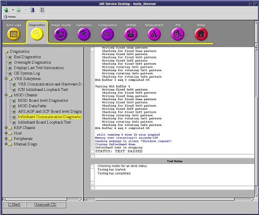

Proprietary to General Electric
Direction 5500113, Rev# 3
Discovery MR750 3.0T Service Methods
Module Version 1.0, Version Date 4/26/07
Proprietary to General Electric |
Diagnostics >> MGD Chassis
The Infiniband Communications Diagnostic verifies the Infiniband board, the ICN1 Infiniband hardware, cabling and (if present) Infiniband switch when in product configuration. Before running this diagnostic you must ensure that the Ethernet cabling and Ethernet switches are functioning correctly.
The diagnostic consists of a server running on the APS processor. The server launches a client program on ICN1 and establishes an Infiniband connection with it. Since the initial Infiniband information exchange uses disk files, it is essential that the Ethernet sub-system is working correctly.
After sending an initial data buffer to test the Infiniband connection, the server and client repeatedly exchange data buffers. An iteration count can be entered which controls the number of sets of buffers exchanged.
After exchanging data, the APS processor will test memory on the Infiniband board. Since the memory is non-contiguous, it is grabbed as a series of buffers. A series of data patterns is written to each buffer in turn.
Since the buffers allocated are of different sizes, the time taken to run all data patterns through one buffer varies. Typically, the first buffer allocated is the largest.
Specify the number of iterations of this memory test prior to running the test.
Table 1:
| Capability | What it does | When to use |
| Infiniband Board Communications Diagnostic | Tests the Infiniband board cabling, switch (if present) and ICN1 Infiniband hardware |
|
Infiniband board in MGD chassis
Infiniband switch (if present)
VRE (Infiniband hardware)
| ||||
| ELECTROCUTION HAZARD! | ||||
| DANGEROUS VOLTAGES ARE PRESENT THROUGH OUT THE SYSTEM CABINET WHEN POWER IS APPLIED. | ||||
| Refer to System Cabinet LOTO |
Infiniband data cables must be connected in their original configuration.
From the Insite Browser, Diagnostic tab, select MGD Chassis > Infiniband Communications Diagnostic.
Enter the desired iteration counts in the fields provided and click the Run button (see Illustration 1).
Wait for the test to complete.
| NOTE: | Once you click [Run], do not click anywhere else in the Common Service Desktop until the test is completed. If you need to abort the test prior to its completion, you must click [Stop]. |
Illustration 1: Test Results

Review the error log and corresponding extended error messages for subsequent actions. Additional responses to the diagnostic’s results are as follows:
Table 2:
| Fault | Problem Description | GE Field Action |
| Green LED next to Infiniband board Port1 is not on |
|
|
| Yellow LED next to Infiniband board Port1 is not on |
|
|
| Test fails |
|
|
After exiting from Diagnostics, perform a scan to verify the system is operating correctly.